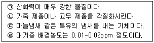
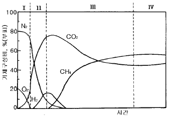

환경기능사 (2001-07-22 기출문제)
1과목: 대기오염방지
1. 연료의 특성에 관한 설명이 잘못된 것은?
- 수분 함유량이 많으면 착화성이 나쁘고 열손실이 크다.
- 회분함량이 많으면 연소효과가 나쁘고 취급이 불편하다.
- 휘발분이 많으면 불꽃이 길고 연기가 발생한다.
- 고정탄소가 많으면 발열량이 낮고 불꽃의 길이가 짧다.
(정답률: 66%)

2. 황 함유량이 2%인 중유 10ton을 연소할 때 생성되는 SO2의 부피는 얼마인가? (단, 함유된 황은 전량 SO2로 된다고 가정한다)
- 32Nm3
- 64Nm3
- 128Nm3
- 140Nm3
(정답률: 36%)
3. 프로판가스(C3H8) 1Sm3을 완전 연소하는데 필요한 이론 공기량(Sm3)은 얼마인가?
- 7.14
- 9.52
- 14.28
- 23.81
(정답률: 43%)
4. 1 V/V ppm에 상당하는 W/W ppm값이 가장 큰 대기오염 물질은?
- 염화수소
- 이산화황
- 이산화질소
- 시안화수소
(정답률: 60%)
5. 불완전 연소시 발생하는 물질로 우리 몸의 적혈구내에 있는 헤모글로빈과 결합하여 적혈구의 산소이동 능력을 저하시킴으로서 치명적인 피해를 입게 하는 가스는?
- 이산화탄소 가스
- 아황산 가스
- 아질산 가스
- 일산화탄소 가스
(정답률: 69%)
6. 아황산가스, 황화수소, 암모니아의 가스제거에 적합하지 않은 흡착제는?
- 실리카겔
- 활성탄
- 알루미나겔
- 지올라이트
(정답률: 58%)
7. 유해가스 처리기술 중 헨리법칙을 바탕으로 하여 오염가스를 제거하는 방법으로 가장 알맞은 것은?
- 흡수
- 흡착
- 연소
- 집진
(정답률: 45%)
8. 연소과정에서 생성되는 질소산화물의 특성중 맞는 것은?
- 화염속에서 생성되는 질소산화물은 주로 NO2이며, 소량의 NO를 함유한다.
- 질소산화물의 생성은 연료중의 질소와 공기중의 질소가 산소와 반응하여 이루어진다.
- 화염온도가 낮을수록 질소산화물의 생성량은 커진다.
- 배기가스중 산소분압이 낮을수록 생성이 커진다.
(정답률: 59%)
9. 중유중에서 가장 중요한 성질로서 온도가 상승할수록 그 수치가 낮아지는 것은?
- 착화점
- 인화점
- 황분
- 점도
(정답률: 47%)
10. 보기와 같은 특성을 지닌 대기오염 물질은?

- 오존
- 암모니아
- 황화수소
- 일산화탄소
(정답률: 69%)
11. 다음 중 사이클론(cyclone)에 대한 설명으로 틀린 것은?
- 사이클론은 중력집진장치의 일반적인 형태이다.
- 같은 사이클론에서는 압력손실이 클수록 집진효율이 높아진다.
- 사이클론은 몸통직경이 작을수록 작은 입자를 포집할 수 있다.
- 작은 몸통직경의 사이클론을 여러개 병렬로 연결한 것을 멀티사이클론이라 한다.
(정답률: 43%)
12. 가스상 대기 오염물질의 제거 방법이 아닌 것은?
- 흡수법
- 흡착법
- 연소법
- 여과법
(정답률: 47%)
13. 어떤 집진시설의 집진율이 99%이고, 집진시설 유입구의 분진 농도가 15.5g/m3일 때 유출구의 분진농도(g/m3)는?
- 0.01
- 0.135
- 0.145
- 0.155
(정답률: 50%)
14. 다음 집진장치 중 동력비가 가장 적은 것은?
- 충진탑
- 사이클론
- 여과 집진기
- 중력 집진기
(정답률: 61%)
15. 대기중 비산먼지를 측정할 때 사용하는 기기는?
- 스택샘플러(Stack sampler)
- 분광광도계(Spectrophtometer)
- 가스크로마토그래프(Gas chromatograph)
- 하이볼륨에어샘플러(High volume air sampler)
(정답률: 52%)
2과목: 폐수처리
16. 염소혼화지에 2,000m3/일의 처리수가 유입할 때 혼화시간을 15분으로 하고 혼화지의 폭은 1.0m, 수심은 0.8m로 하였다. 수로(혼화지)의 유효길이는?
- 12m
- 15m
- 20m
- 26m
(정답률: 25%)
17. 혐기성 소화조의 장점이라 볼 수 없는 것은?
- 폐슬러지량 감소
- 유출수의 수질양호
- 고농도 폐수처리
- 이용가능한 가스생산
(정답률: 39%)
18. 수심이 4m이고 체류시간이 3시간인 장방형 침전지의 표면부하율은 얼마인가?
- 32m3/m2·일
- 30m3/m2·일
- 28m3/m2·일
- 26m3/m2·일
(정답률: 42%)
19. 30m×18m×3.6m 규격의 직사각형조에 물이 가득차 있다. 약품주입농도를 80mg/L로 하기 위하여 이조에 화학약품을 몇 kg 넣어야 하는가?
- 214kg
- 156kg
- 148kg
- 134kg
(정답률: 44%)
20. 함수율 97%인 슬러지 20m3을 함수율 95%로 농축하였다면 슬러지의 부피는?
- 8m3
- 10m3
- 12m3
- 14m3
(정답률: 51%)
21. 다음중 슬러지 팽화의 지표로서 관계가 깊은 것은?
- SRT
- SVI
- MLSS
- MLVSS
(정답률: 60%)
22. 산성폐수의 특성이라 볼 수 없는 것은?
- 맛이 시다.
- 염기를 중화시킨다.
- 리트머스 시험지를 푸르게 한다.
- 금속과 반응하여 H2 가스를 발생한다.
(정답률: 58%)
23. 생물학적 폐수처리에 있어서 팽화(Bulking)현상의 원인이 되지 않는 것은?
- 미생물에 비해서 유기물 먹이가 너무 많을 경우
- 포기조의 용존산소가 부족할 경우
- 유입수에 갑자기 산업폐수가 혼합되어 유입될 경우
- 포기조내 질소와 인이 유입될 경우
(정답률: 47%)
24. 독성 있는 6가를 독성 없는 3가로 pH2-4에서 환원시키고 3가를 pH8-11범위에서 침전시키는 폐수는?
- 납 함유 폐수
- 비소 함유 폐수
- 크롬 함유 폐수
- 카드뮴 함유 폐수
(정답률: 67%)
25. 파라치온, 말라치온과 같은 농약이 함유되었던 폐수와 가장 관계가 깊은 것은?
- 납화합물
- 시안화합물
- 크롬화합물
- 유기인화합물
(정답률: 36%)
26. 산도(acidity)나 경도(hardness)는 무엇으로 환산하느냐?
- 염화칼슘
- 탄산칼슘
- 질산칼슘
- 수산화칼슘
(정답률: 71%)
27. 입자가 침강하는 동안 입자가 점점 커져서 침전 속도가 빨라지는 침전은?
- 독립침전(Ⅰ형)
- 응집(응결)침전(Ⅱ형)
- 지역침전(Ⅲ형)
- 압축침전(Ⅳ형)
(정답률: 73%)
28. 침전한 슬러지에서 가장 먼저 처리하는 것은?
- 수분 제거
- 병원균 제거
- 고형물 함량 제거
- 부패성 유기물 제거
(정답률: 46%)
29. 염소 살균에서 용존염소가 반응하여 물의 불쾌한 맛과 냄새를 유발하는 것은?
- 클로라민
- 용존불소
- 클로로페놀
- 트리할로메탄
(정답률: 53%)
30. 침전지 유입구에 설치하는 정류판(baffle)의 목적은?
- 폐수의 부유물 제거
- 유속의 감소와 유량의 분산유도
- 폐수의 흐름을 일정한 방향으로 유도
- 유입구 측의 침전방지를 위해 유속증가
(정답률: 36%)
31. 레이놀즈수의 관계인자가 아닌 것은?
- 입자의 지름
- 액체의 점도
- 액체의 비표면적
- 입자의 속도
(정답률: 55%)
32. 입자의 침강속도 0.5m/day, 유입수량 50m3/day, 침전지 표면적 50m2, 깊이 2m인 침전지에서의 제거효율은?
- 20%
- 50%
- 70%
- 90%
(정답률: 47%)
33. pH 2인 폐수와 pH 5인 폐수를 중화처리하고자 할 때 소요되는 중화제 약품량의 비는?
- 3 : 1
- 300 : 1
- 1000 : 1
- 10000 : 1
(정답률: 49%)
34. 명반을 폐수의 응집조에 주입후, 완속교반을 행하는 주된 목적은?
- floc의 입자를 크게 증가시키기 위하여
- floc과 공기를 잘 접촉시키기 위하여
- 명반을 원수에 용해시키기 위하여
- 생성된 floc의 수를 증가시키기 위하여
(정답률: 57%)
35. 어떤 폐수의 응집처리를 하기 위하여 Jar Test를 하였다. 폐수 300mL에 대하여 0.2%의 황산알루미늄 15mL를 넣었을 때 가장 좋은 결과가 나왔다. 폐수 1L당 황산알루미늄의 주입량은?
- 10㎎/L
- 50㎎/L
- 100㎎/L
- 150㎎/L
(정답률: 36%)
3과목: 폐기물처리
36. 소각로에서 폐기물을 소각할때 연소 효율을 높이기 위한 조건과 가장 거리가 먼 것은?
- 적당한 온도
- 적당한 공기와 연료비
- 적당한 압력
- 적당한 난류
(정답률: 35%)
37. 함수율이 40%인 폐기물을 건조시켜 함수율 20%로 하였다면 중량은 어떻게 되는가?
- 1/4로 감소
- 1/2로 감소
- 3/4로 감소
- 5/6로 감소
(정답률: 48%)
38. 도시지역에서의 쓰레기 수거계통으로 가장 적합한 것은?
- 발생원-저장용기-처리장-수거차-적환장
- 발생원-적환장-수거차-저장용기-처리장
- 발생원-저장용기-수거차-적환장-처리장
- 발생원-저장용기-적환장-수거차-처리장
(정답률: 51%)
39. 폐기물을 압축시킨 결과 용적감소율이 80%였다면 압축비는 얼마인가?
- 3
- 4
- 5
- 6
(정답률: 42%)
40. 어느 도시의 쓰레기 수거량은 3,000,000톤/년이다. 이 도시의 쓰레기를 1일 평균 수거인부 5000명이 1년 중 300일 동안 수거하였다면 수거능력(MHT)은 얼마인가? (단, 1일 작업시간은 7시간이다.)
- 1.5
- 3.5
- 5
- 14
(정답률: 60%)
41. 폐기물 파쇄의 목적 중 잘못된 것은?
- 입경의 분포화
- 겉보기 밀도의 증가
- 균질화
- 비표면적의 감소
(정답률: 42%)
42. 폐기물을 가벼운 것과 무거운 것으로 분리하기 위하여 중력이나 탄도학을 이용한 선별 방법은?
- 손 선별
- 스크린 선별
- 자석 선별
- 관성 선별
(정답률: 63%)
43. 분뇨의 특성에 대한 설명 중 잘못된 것은?
- 분뇨는 유기물을 많이 함유하고 있다.
- 분뇨는 염분 및 질소의 농도가 높다.
- 분뇨는 토사 및 협잡물을 다량 함유하고 있다.
- 분뇨는 고액분리가 쉽다.
(정답률: 63%)
44. 분뇨처리시설에서 발생하는 취기를 탈취하는 방법 중 물리적 방법은?
- 수세법
- 마스킹법
- 스크린법
- 촉매연소법
(정답률: 46%)
45. 분뇨의 저장 시설에서 스컴층이 형성되는 것을 방지하는 방법 중 가장 적절한 것은?
- 응집제를 투여한다.
- 물을 살수 한다.
- 35℃정도로 가열한다.
- 교반기를 사용하여 교반한다.
(정답률: 44%)
46. 부피가 1,000m3이고 밀도가 400Kg/m3인 폐기물을 밀도가 700Kg/m3이 되도록 압축시키면 부피는?
- 424(m3)
- 571(m3)
- 653(m3)
- 714(m3)
(정답률: 46%)
47. 분뇨 및 슬러지 처리에 대한 설명으로 틀린 것은?
- 슬러지는 함수율이 매우 높으므로 그대로 처리하기에는 용적이 너무 크다. 따라서 수분제거를 일차적으로 고려해야 한다.
- 분뇨를 희석하여 대규모로 도시하수와 병행하여 처리할 때 혐기성 소화를 이용한다.
- 슬러지의 발생장소는 정수장, 폐수처리장등이다.
- 슬러지의 일반적 처리공정은 농축→소화→개량→탈수 및 건조→최종처분으로 구성된다.
(정답률: 43%)
48. 노의 하부로부터 가스를 주입하여 모래를 띄운 후 이를 가열시켜 상부에서 폐기물을 투입하여 소각하는 방법은?
- 유동상소각로
- 다단로
- 회전로
- 고정상소각로
(정답률: 70%)
49. 쓰레기 발생량을 조사하는 방법중 대표적인 것이라 볼 수 없는 것은?
- 적재차량 계수분석
- 물질 수지법
- 통계 분석법
- 직접 계근법
(정답률: 55%)
50. 쓰레기의 수거노선을 결정하는데 고려되어야 할 요소와 가장 거리가 먼 것은?
- 발생량
- 교통혼잡
- 노선의 지형
- 생활정도
(정답률: 59%)
51. 다음 그림은 폐기물을 매립한 후 발생하는 생성가스의 농도 변화를 단계적으로 나타낸 것이다. 유기물이 효소에 의해 발효되는 혐기성 비메탄 단계는?

- Ⅰ구역
- Ⅱ구역
- Ⅲ구역
- Ⅳ구역
(정답률: 66%)
52. 슬러지에 열과 압력을 작용시켜 용존산소에 의하여 화학적으로 슬러지 내의 유기물을 산화시키는 방법은?
- 포졸란(Pozzolan)공법
- 초임계(Supercritical)공법
- 임호프(Imhoff)공법
- 짐머만(Zimmerman)공법
(정답률: 62%)
53. 매립지에서 지반 침하를 일으키는 요인으로 볼 수 없는 것은?
- 초기의 다짐 정도
- 폐기물의 물리적 특성
- 폐기물의 분해속도
- 차수막의 재질과 두께
(정답률: 44%)
54. 각종 폐수처리 공정에서 발생되는 슬러지를 소화시키는 목적이 아닌 것은?
- 유기물을 분해시켜 안정화시킨다.
- 슬러지의 무게와 부피를 감소시킨다.
- 병원균을 죽이거나 통제 할 수 있다.
- 함수율을 높여 수송을 용이하게 할 수 있다.
(정답률: 50%)
55. 침출수 중의 난분해성 유기물의 처리에 사용되는 것은?
- 펜턴(Fenton)시약
- 옥살산(Oxalic acid) 용액
- 중크롬산(Bichromate) 용액
- 네슬러(Nessler) 시약
(정답률: 64%)
4과목: 소음 진동학
56. 어느 벽체의 투과손실값이 32dB라면, 이 벽체의 투과율(τ)은?
- 6.3×10-4
- 7.3×10-4
- 8.3×10-4
- 9.3×10-4
(정답률: 51%)
57. 음의 회절에 관한 설명 중 틀린 것은?
- 장애물 뒤쪽으로 음이 전파하는 현상이다.
- 파장이 길수록 회절이 잘 된다.
- 물체의 구멍이 작을수록 잘 회절한다.
- 고주파음 일수록 회절이 잘 된다.
(정답률: 32%)
58. 어떤 기기의 진동을 측정하였을때 암진동보다 3dB이 높게 측정되었다. 이때의 암진동에 대한 보정은?
- 0 dB
- -1 dB
- -2 dB
- -3 dB
(정답률: 48%)
59. 소음계의 표준음발생기 오차범위기준으로 알맞는 것은?
- ±1.0dB 이내
- ±0.5dB 이내
- ±0.3dB 이내
- ±0.1dB 이내
(정답률: 27%)
60. 다음 나열한 방진대책중 바람직하지 않은 것은?
- 설치위치의 변경
- 방진재료의 부설
- 공진점에서 기계의 운전
- 가진력의 감소
(정답률: 39%)